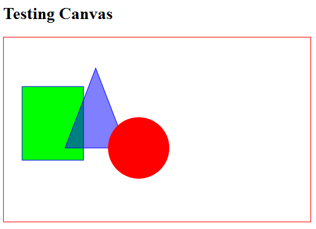
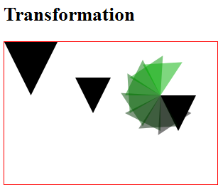

The basics features of HTML5 and CSS3 has been covered in "HTML5/CSS3 Basics". This articles covers the advanced features of HTML5/CSS3.
Canvas API
References:
- MDC's Canvas Tutorial @ https://developer.mozilla.org/en/Canvas_tutorial.
- WHTAWG's Canvas API specification @ http://www.whatwg.org/specs/web-apps/current-work/multipage/the-canvas-element.html.
Before HTML5, drawing on the browser screen usually involves absolutely position and stretching an image using CSS or using plug-ins like flash. HTML5 provides a "Canvas API" for drawing primitives such as line, arc, rectangle, as well as supporting transformation, just like any 2D Graphics API. Canvas is supported in most of the modern browsers, such as Firefox, Chrome, and latest IE.
To use canvas API, first create a canvas element via the new <canvas></canvas> tag, e.g.,
1 2 3 4 5 6 7 8 9 10 11 12 13 14 15 16 17 |
<!DOCTYPE html> <!-- H5CanvasTest.html --> <html lang="en"> <head> <meta charset="utf-8" > <title>Test HTML5 Canvas API</title> <style> #canvas { border: 1px solid red; } </style> </head> <body> <h2>Testing HTML5 Canvas</h2> <canvas id="canvas" height="200" width="300">Canvas is not supported</canvas> </body> </html> |
How it Works?
- [TODO]
- The default width and height is 300 by 150 pixels.
Let's Draw Some Simple Shapes
The steps of using canvas are as follows:
- Create a canvas using the HTML5's new
<canvas id="canvas"></canvas>tag with a uniqueid. - Write a JavaScript:
- Use
canvas = document.getElementById("canvas")to select the canvas element. - Use
context = canvas.getContext("2d")to get the 2D drawing context. Currently, only 2D context is supported. - You can use the
contextto draw shapes and perform transformation.
- Use
Example: Draw/Fill a Rectangle, a Triangle and a Circle

1 2 3 4 5 6 7 8 9 10 11 12 13 14 15 16 17 18 19 20 21 22 23 24 25 26 27 28 29 30 31 32 33 34 35 36 37 38 39 40 41 42 43 44 45 46 47 48 49 50 51 52 53 54 |
<!DOCTYPE html> <!-- H5CanvasDrawPrimitives.html --> <html lang="en"> <head> <meta charset="utf-8" > <title>HTML5 Drawing Primitive Shapes</title> <style> #canvas { border: 1px solid red; } </style> <script> window.addEventListener("load", draw, true); function draw() { // Retrieve the canvas element and set its CSS style var canvas = document.getElementById("canvas"); canvas.width = 500; canvas.height = 300; // Get the 2D drawing context for the canvas element var context = canvas.getContext("2d"); // Draw a Rectangle using the rect primitive context.fillStyle = "rgb(0, 255, 0)"; context.fillRect(30, 80, 100, 120); // x, y, width, height context.strokeStyle = "#0000FF"; context.strokeRect(30, 80, 100, 120); // Draw a triangle using path context.beginPath(); context.moveTo(150, 50); context.lineTo(200, 180); context.lineTo(100, 180); context.closePath(); context.fillStyle = "rgba(0, 0, 255, 0.5)"; // transparent context.fill(); context.stroke(); // Fill a circle using path context.beginPath(); // centerX, centerY, radius, beginAngle, engAngle, antiClockwise context.arc(220, 180, 50, 0, Math.PI*2, true); context.fillStyle="red"; context.fill(); // closePath() implicitly } </script> </head> <body> <h2>HTML5 Drawing Primitive Shapes</h2> <canvas id="canvas">Canvas is not supported</canvas> </body> </html> |
How it Works?
[TODO]
To check if canvas is supported, you could use the following script:
var canvas = document.getElementById("canvasID");
if (canvas.getContext){
var context = canvas.getContext("2d");
// drawing codes here
} else {
// canvas-unsupported codes here
}
Draw/Fill Primitive Shapes
- Coordinate System: The origin (0, 0) is at the top-left corner, with x-axis pointing to the right and y-axis pointing downward. This is consistent with most 2D graphics system.
- Color and Style:
attribute any strokeStyle; // default black attribute any fillStyle; // default black
Color can be specified via "#rrggbb" (from "#000000" to "#FFFFFF"), "rgb(r, g, b)", "rgba(r, g, b, a)" (where0≤r,g,b≤255and0≤a≤1specifies the transparency), or CSS color literals (such as "red", "green", "blue"). - Rectangle: The canvas API supports only one primitive shape - rectangle. All the other shapes are formed using path.
void clearRect(double topLeftX, double topLeftY, double width, double height); // Clear the rectangular area, i.e., set to transparent. void fillRect(double topLeftX, double topLeftY, double width, double height); // Fill the rectangular area with fillStyle. void strokeRect(double topLeftX, double topLeftY, double width, double height); // Draw the outline of the rectangle, with strokeStyle.
- Path: These steps are need to render using path:
- Call the
beginPath()to start a path, which may contain many sub-paths (such as line, arc). ThebeginPath()resets (clears) the sub-path list. - Define a path using
rect(),arc(), orxxxTo(). - Optionally call the
closePath()to form a close loop, i.e., join the last point to the first point with a straight line. - Invoke
fill()and/orstroke()to fill the path or render the outline. Iffill()is used, the open shape will be closed and there is no need toclosePath().
void beginPath(); // Start a path, clear the sub-path list void closePath(); // Join the last point and the first point with a straight line. void moveTo(double x, double y); // Position without joining with previous point. void lineTo(double x, double y); void arcTo(double x1, double y1, double x2, double y2, double radius); void quadraticCurveTo(double cpx, double cpy, double x, double y); void bezierCurveTo(double cp1x, double cp1y, double cp2x, double cp2y, double x, double y); void rect(double x, double y, double w, double h); void arc(double x, double y, double radius, double startAngle, double endAngle, optional boolean anticlockwise); // various Path: line, arc, curves, shape void fill(); // Fill the shape enclosed by the path void stroke(); // Draw the outline
- Call the
Transformation
The commonly-used JavaScript functions for transformation are:
void save(); // push state on state stack void restore(); // pop state stack and restore state void translate(double x, double y); void rotate(double angle); void scale(double x, double y); void transform(double m11, double m12, double m21, double m22, double dx, double dy); void setTransform(double m11, double m12, double m21, double m22, double dx, double dy);
The default transform is the identity matrix.
Example

1 2 3 4 5 6 7 8 9 10 11 12 13 14 15 16 17 18 19 20 21 22 23 24 25 26 27 28 29 30 31 32 33 34 35 36 37 38 39 40 41 42 43 44 45 46 47 48 49 50 51 52 53 54 55 56 |
<!DOCTYPE html> <!-- H5CanvasTransform.html --> <html lang="en"> <head> <meta charset="utf-8" > <title>HTML5 Transformation</title> <style> #canvas { border: 1px solid red; } </style> <script> window.addEventListener("load", draw, true); function draw() { // Retrieve the canvas element and set its CSS style var canvas = document.getElementById("canvas"); canvas.width = 300; canvas.height = 200; // Get the 2D drawing context for the canvas element var context = canvas.getContext("2d"); context.save(); // save the state context.translate(100, 50); fillTriangle(context); // default styles; context.translate(120, 25); fillTriangle(context); var i; for (i = 0; i < 8; i++) { context.rotate(Math.PI/6); context.fillStyle = "rgba(0, " + (i*25) + ", 0, 0.5)"; fillTriangle(context); } context.restore(); // restore the saved state context.scale(1.5, 1.5); fillTriangle(context); } function fillTriangle(context) { context.beginPath(); context.moveTo(0, 0); context.lineTo(50, 0); context.lineTo(25, 50); context.fill(); } </script> </head> <body> <h2>HTML5 Transformation</h2> <canvas id="canvas">Canvas is not supported</canvas> </body> </html> |
How It Works?
- We usually invoke
save()to push the state of the canvas onto the stack. The state includes all the transforms applied so far, the styles and the clipping path. We can restore the state viarestore(), which pops the saved state from the stack. Translate(),rotate()andscale()are referenced to the current origin, after the latest transform. Rotation is anti-clockwise measured in radian.- The function
transform(m11, m12, m21, m22, dx, dy)multiplies the current transform by the given transformation matrix:m11 m12 dx m21 m22 dy 0 0 1
where(m11, m12, m21, m22)represents the rotation and(dx, dy)represents translation.
ThesetTransform(m11, m12, m21, m22, dx, dy)set the transform to the given matrix, i.e., it resets the current transform to identity and then apply thetransform()function.
Using Images
To draw an image on the canvas: Find a reference to an image object or other canvas object as a source, and invoke drawImage() function.
You can construct an image reference and draw the image onto the canvas as follows:
var myImg = new Image(); // Create a new <img> element myImg.src = "imageFilename"; // Set source path myImg.onload = function() { // Wait till the image is loaded // Do drawImage here drawImage(myImg, 0, 0); ...... };
You can also get an image reference via document.images property, or functions document.getElementsByTagName("img"), document.getElementById("imageID").
Example:
[TODO]
void drawImage(HTMLImageElement image, double x, double y); // Draw the image with top-left corner at x and y. void drawImage(HTMLImageElement image, double x, double y, double width, double height); // Draw and scale the image to the specified width and height. void drawImage(HTMLImageElement image, double srcX, double srcY, double srcWidth, double srcHeight, double destX, double destY, double destWidth, double destHeight); // Slice part of the source image and draw to the destination. void drawImage(HTMLCanvasElement image, double dx, double dy); void drawImage(HTMLCanvasElement image, double dx, double dy, double dw, double dh); void drawImage(HTMLCanvasElement image, double double srcX, double srcY, double srcWidth, double srcHeight, double destX, double destY, double destWidth, double destHeight); void drawImage(HTMLVideoElement image, double dx, double dy); void drawImage(HTMLVideoElement image, double dx, double dy, double dw, double dh); void drawImage(HTMLVideoElement image, double srcX, double srcY, double srcWidth, double srcHeight, double destX, double destY, double destWidth, double destHeight);
Styles
// line caps/joins attribute double lineWidth; // (default 1) attribute DOMString lineCap; // "butt", "round", "square" (default "butt") attribute DOMString lineJoin; // "round", "bevel", "miter" (default "miter") attribute double miterLimit; // (default 10)
Animation
Read "HTML5 Bouncing Ball".
The steps are:
- Clear the canvas: via
fillRect(). - Save the canvas state.
- Draw the shape.
- Restore the canvas state.
You can use the following functions to control the timing:
setInterval():setTimeout(): run once after the set timing expires.
Canvas API DOM Interface
interface HTMLCanvasElement : HTMLElement {
attribute unsigned long width;
attribute unsigned long height;
DOMString toDataURL(optional DOMString type, any... args);
void toBlob(FileCallback? callback, optional DOMString type, any... args);
object? getContext(DOMString contextId, any... args);
};
interface CanvasRenderingContext2D {
// back-reference to the canvas
readonly attribute HTMLCanvasElement canvas;
// state
void save(); // push state on state stack
void restore(); // pop state stack and restore state
// transformations (default transform is the identity matrix)
void scale(double x, double y);
void rotate(double angle);
void translate(double x, double y);
void transform(double a, double b, double c, double d, double e, double f);
void setTransform(double a, double b, double c, double d, double e, double f);
// compositing
attribute double globalAlpha; // (default 1.0)
attribute DOMString globalCompositeOperation; // (default source-over)
// colors and styles
attribute any strokeStyle; // (default black)
attribute any fillStyle; // (default black)
CanvasGradient createLinearGradient(double x0, double y0, double x1, double y1);
CanvasGradient createRadialGradient(double x0, double y0, double r0, double x1, double y1, double r1);
CanvasPattern createPattern(HTMLImageElement image, DOMString repetition);
CanvasPattern createPattern(HTMLCanvasElement image, DOMString repetition);
CanvasPattern createPattern(HTMLVideoElement image, DOMString repetition);
// line caps/joins
attribute double lineWidth; // (default 1)
attribute DOMString lineCap; // "butt", "round", "square" (default "butt")
attribute DOMString lineJoin; // "round", "bevel", "miter" (default "miter")
attribute double miterLimit; // (default 10)
// shadows
attribute double shadowOffsetX; // (default 0)
attribute double shadowOffsetY; // (default 0)
attribute double shadowBlur; // (default 0)
attribute DOMString shadowColor; // (default transparent black)
// rects
void clearRect(double x, double y, double w, double h);
void fillRect(double x, double y, double w, double h);
void strokeRect(double x, double y, double w, double h);
// path API
void beginPath();
void closePath();
void moveTo(double x, double y);
void lineTo(double x, double y);
void quadraticCurveTo(double cpx, double cpy, double x, double y);
void bezierCurveTo(double cp1x, double cp1y, double cp2x, double cp2y, double x, double y);
void arcTo(double x1, double y1, double x2, double y2, double radius);
void rect(double x, double y, double w, double h);
void arc(double x, double y, double radius, double startAngle, double endAngle, optional boolean anticlockwise);
void fill();
void stroke();
void drawSystemFocusRing(Element element);
boolean drawCustomFocusRing(Element element);
void scrollPathIntoView();
void clip();
boolean isPointInPath(double x, double y);
// text
attribute DOMString font; // (default 10px sans-serif)
attribute DOMString textAlign; // "start", "end", "left", "right", "center" (default: "start")
attribute DOMString textBaseline; // "top", "hanging", "middle", "alphabetic", "ideographic", "bottom" (default: "alphabetic")
void fillText(DOMString text, double x, double y, optional double maxWidth);
void strokeText(DOMString text, double x, double y, optional double maxWidth);
TextMetrics measureText(DOMString text);
// drawing images
void drawImage(HTMLImageElement image, double dx, double dy);
void drawImage(HTMLImageElement image, double dx, double dy, double dw, double dh);
void drawImage(HTMLImageElement image, double sx, double sy, double sw, double sh, double dx, double dy, double dw, double dh);
void drawImage(HTMLCanvasElement image, double dx, double dy);
void drawImage(HTMLCanvasElement image, double dx, double dy, double dw, double dh);
void drawImage(HTMLCanvasElement image, double sx, double sy, double sw, double sh, double dx, double dy, double dw, double dh);
void drawImage(HTMLVideoElement image, double dx, double dy);
void drawImage(HTMLVideoElement image, double dx, double dy, double dw, double dh);
void drawImage(HTMLVideoElement image, double sx, double sy, double sw, double sh, double dx, double dy, double dw, double dh);
// pixel manipulation
ImageData createImageData(double sw, double sh);
ImageData createImageData(ImageData imagedata);
ImageData getImageData(double sx, double sy, double sw, double sh);
void putImageData(ImageData imagedata, double dx, double dy);
void putImageData(ImageData imagedata, double dx, double dy, double dirtyX, double dirtyY, double dirtyWidth, double dirtyHeight);
};
interface CanvasGradient {
// opaque object
void addColorStop(double offset, DOMString color);
};
interface CanvasPattern {
// opaque object
};
interface TextMetrics {
readonly attribute double width;
};
interface ImageData {
readonly attribute unsigned long width;
readonly attribute unsigned long height;
readonly attribute Uint8ClampedArray data;
};
Link To HTML/CSS References & Resources